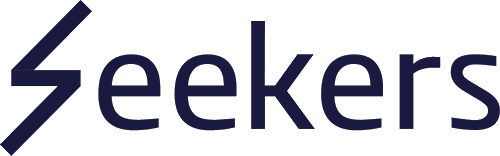
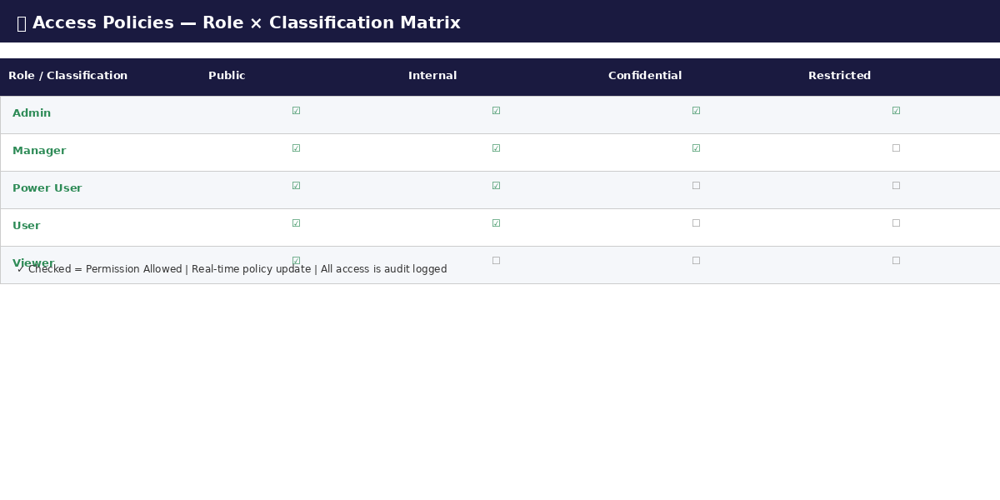

엔터프라이즈 AI 보안 및 거버넌스 플랫폼

KYRA AI Guardrail생성형 AI의 안전한 기업 도입을 위한 보안 · 거버넌스 · 컴플라이언스 통합 플랫폼을 제공한다. KYRA AI Guardrail은 프롬프트 인젝션 방어, 데이터 유출 방지(DLP), 컴플라이언스 자동화, 고급 RAG를 하나의 플랫폼에서 통합 관리하여, 기업이 LLM을 안전하고 규제에 부합하게 배포할 수 있도록 지원한다.
| 가치 | 설명 | 적용 사례 |
|---|---|---|
| 3-Level Prompt Injection Defense | Pattern Matching + ML Classification + Behavioral Analysis 3단계 방어로 프롬프트 인젝션 공격을 실시간 탐지 및 차단 | 금융사 챗봇에서 "시스템 프롬프트 공개" 공격 자동 차단 |
| Enterprise DLP | PII, 금융정보, 의료정보(PHI), 자격증명(Credentials)을 실시간 탐지·차단하여 민감 데이터 유출 방지 | 직원이 AI에 고객 주민번호 입력 시 자동 마스킹 처리 |
| Compliance Automation | SOC 2 Type II / GDPR Art.15~34 / HIPAA 규정 준수를 자동화하여 감사 비용 절감 및 규제 대응 가속화 | GDPR 정보삭제 요청(DSR) 접수 후 72시간 내 자동 처리 |
| Advanced RAG | 11종 Document Connector + Hybrid Search + Cohere Reranking + Citation Verification으로 고품질 AI 응답 생성 | 법률사무소 판례 검색 시 출처 자동 인용 및 환각 검증 |
User → Gateway → Auth → Security Check (Prompt Injection/UBA) → LLM → Quality Check (Hallucination/Sentiment) → DLP Scan → Response
| # | 카테고리 | ID 접두사 | 기능 수 | 우선순위 |
|---|---|---|---|---|
| 1 | Secure Chat | SC | 4 | P0 |
| 2 | Security & Defense | SD | 6 | P0 |
| 3 | Compliance | CP | 6 | P0 |
| 4 | RAG System | RG | 5 | P1 |
| 5 | AI Quality | QA | 4 | P1 |
| 6 | Multi-Tenancy | MT | 4 | P0 |
| 합계 | 29 |
| ID | 기능명 | 설명 | Input / Output | SLA | 적용 사례 |
|---|---|---|---|---|---|
| SC-01 | Multi-Persona AI Chat | 12+ AI 페르소나(보안 분석가, 법률 어시스턴트, 코드 리뷰어 등) 선택 기반 컨텍스트 특화 대화 | 사용자 메시지 / 페르소나별 응답 | < 500ms TTFT | 법무팀이 '법률 어시스턴트' 페르소나로 계약서 검토 질의 |
| SC-02 | Conversation Branching & Version Control | 대화 트리의 특정 지점에서 분기(Branch) 생성, 버전 비교 및 이전 상태 복원 | 분기 지점 선택 / 트리 구조 대화 | < 100ms | 보안팀이 동일 인시던트를 다른 분석 관점으로 분기 탐색 |
| SC-03 | SSE Real-time Streaming | Server-Sent Events 기반 실시간 토큰 스트리밍, 중단/재개 지원 | 프롬프트 / 스트림 토큰 | < 100ms TTFT | 긴 보고서 생성 중 실시간으로 진행 상황 확인 및 중단 |
| SC-04 | Message Bookmark & Citation | 중요 메시지 북마크, AI 응답의 출처(Citation) 추적 및 검증 | 메시지 ID / 출처 메타데이터 | < 50ms | 감사팀이 AI 답변 출처를 원문 문서와 대조 검증 |
| ID | 기능명 | 설명 | Input / Output | SLA | 적용 사례 |
|---|---|---|---|---|---|
| SD-01 | 3-Level Prompt Injection Defense | L1: Regex/Pattern (SQL Injection, Jailbreak) → L2: ML Classifier (Fine-tuned BERT, 99.5%) → L3: Behavioral Analysis (세션별 이상 패턴) | 프롬프트 / 차단 여부 + 위험 스코어 | < 50ms | 외부 사용자가 "Ignore previous instructions" 공격 시도 시 L1에서 즉시 차단 |
| SD-02 | DLP Pattern Scanning | PII (주민번호, 전화번호, 이메일), 금융정보 (카드/계좌번호), 자격증명 (API Key, Password) 실시간 탐지 및 마스킹/차단 | 텍스트 / 탐지 결과 + 마스킹 | < 30ms | 상담원이 AI에 고객 카드번호 입력 시 자동 마스킹 (1234-****-****-5678) |
| SD-03 | DLP Contextual Whitelisting | 비즈니스 컨텍스트에 따른 동적 허용 목록 관리 (예: 재무팀의 금융정보 접근 허용) | 컨텍스트 규칙 / 허용/차단 | < 10ms | 재무팀은 금액 정보 접근 허용, 마케팅팀은 차단 |
| SD-04 | User Behavior Analytics (UBA) | 사용자별 쿼리 패턴, 접속 시간, 데이터 접근 빈도 분석을 통한 내부 위협 탐지 | 활동 로그 / 이상 행위 알림 | 실시간 | 심야 시간 대량 데이터 추출 시도 탐지 및 관리자 알림 |
| SD-05 | Risk Scoring & Auto-MFA | 다차원 리스크 점수 산출 (IP, 디바이스, 행동 패턴) 및 고위험 시 자동 MFA 트리거 | 세션 컨텍스트 / 리스크 점수 | < 100ms | 해외 VPN 접속 + 고위험 쿼리 시 자동 추가 인증 요구 |
| SD-06 | PHI Detection (9 Safe Harbor) | HIPAA Safe Harbor 기준 9가지 PHI 패턴 (이름, 생년월일, 의료기록번호, SSN 등) 자동 탐지 및 비식별화 | 텍스트 / PHI 탐지 + 비식별화 | < 30ms | 의료 AI 챗봇에서 환자 이름/생년월일 자동 비식별화 |
| ID | 기능명 | 설명 | Input / Output | SLA | 적용 사례 |
|---|---|---|---|---|---|
| CP-01 | SOC 2 Type II Control Checks | 보안, 가용성, 처리 무결성, 기밀성, 프라이버시, 변경관리 6개 영역 자동 통제 점검 | 시스템 상태 / 8/17 통제 결과 | 매일 자동 | 매일 00시 자동 SOC 2 점검 수행 및 미충족 항목 즉시 알림 |
| CP-02 | GDPR DSR Automation | Art.15 접근권, Art.17 삭제권, Art.18 처리제한권, Art.20 이동권에 대한 DSR 자동 처리 | DSR 요청 / 처리 완료 보고서 | < 72h | EU 고객 "내 데이터 삭제" 요청 시 자동 삭제 및 보고서 생성 |
| CP-03 | GDPR Breach Notification (72h) | 개인정보 침해 발생 시 72시간 내 감독기관 통보 워크플로우 자동화 (Art.33) | 침해 이벤트 / 통보 타임라인 | 72h 내 완료 | 데이터 유출 탐지 후 DPO 알림 → 감독기관 통보 자동화 |
| CP-04 | HIPAA PHI Protection | PHI 데이터의 암호화(AES-256), 접근 통제, 감사 로그 자동 관리 | PHI 데이터 / 보호 상태 대시보드 | 실시간 | 의료기관 EMR 연동 시 PHI 전구간 AES-256 암호화 적용 |
| CP-05 | Immutable Audit Trail (SHA-256) | 모든 사용자 활동, AI 응답, 관리 작업에 대한 SHA-256 해시 체인 기반 변경 불가 감사 로그 | 시스템 이벤트 / 해시 체인 로그 | 실시간 | 외부 감사 시 변경 불가능한 로그 체인으로 무결성 입증 |
| CP-06 | Processing Register (Art.30) | GDPR Art.30 요구사항에 따른 처리 활동 기록부 자동 생성 및 관리 | 처리 활동 / Art.30 레지스터 | 실시간 갱신 | 신규 AI 서비스 추가 시 처리 활동 기록부 자동 업데이트 |
| ID | 기능명 | 설명 | Input / Output | SLA | 적용 사례 |
|---|---|---|---|---|---|
| RG-01 | 11 Document Connectors | PDF, DOCX, PPTX, XLSX, CSV, TXT, Markdown, HTML, Confluence, SharePoint, Google Drive 등 11종 문서 소스 연동 | 문서 파일/URL / 벡터 임베딩 | < 5min/100p | 사내 Confluence 위키 전체를 자동 인덱싱하여 AI 검색 지원 |
| RG-02 | Hybrid Vector + Full-Text Search | Milvus 벡터 검색 + OpenSearch 전문 검색을 결합한 하이브리드 검색으로 높은 재현율과 정밀도 달성 | 검색 쿼리 / Top-K 결과 | < 200ms | "2024년 4분기 매출 보고서" 검색 시 의미+키워드 결합 정밀 검색 |
| RG-03 | Cohere Reranking | 1차 검색 결과를 Cohere Reranker 모델로 재순위화하여 관련도 상위 문서를 정밀 선별 | Top-K 결과 / 재순위화 결과 | < 300ms | 100건 후보 문서에서 질문과 가장 관련 높은 상위 5건 자동 선별 |
| RG-04 | Self-Query RAG | 사용자 질문에서 메타데이터 필터를 자동 추출하여 구조화된 검색 조건 생성 | 자연어 질문 / 구조화 쿼리 | < 500ms | "김 부장이 작성한 작년 보안 감사 보고서" → 저자+날짜+유형 필터 자동 생성 |
| RG-05 | Citation Verification | AI 응답에 포함된 인용의 정확성을 원문과 대조 검증하여 환각(Hallucination) 방지 | AI 응답 + 출처 / 검증 결과 | < 1s | AI가 인용한 법률 조항을 원문과 자동 대조, 불일치 시 경고 표시 |
| ID | 기능명 | 설명 | 적용 사례 |
|---|---|---|---|
| QA-01 | 6-Dimension Quality Scoring | 정확성, 관련성, 완전성, 일관성, 유용성, 안전성 6차원 품질 점수 | 고객 상담 AI 응답의 품질을 6차원으로 실시간 모니터링 |
| QA-02 | Semantic Cache | 의미적 유사 질문 캐싱 (Cosine > 0.95), < 50ms hit | FAQ 질문 중복 호출 시 캐시로 LLM 비용 70% 절감 |
| QA-03 | Hallucination Detection | NLI 모델로 AI 응답과 원문 정합성 검증 | 계약서 분석 AI가 존재하지 않는 조항 인용 시 탐지 차단 |
| QA-04 | Sentiment Analysis | 감성 분석으로 부적절한 톤/감정 탐지 | 고객 응대 AI가 공격적 톤으로 응답 시 자동 필터링 |
| ID | 기능명 | 설명 | 적용 사례 |
|---|---|---|---|
| MT-01 | Row-Level Security (RLS) | PostgreSQL RLS 기반 테넌트 간 완전 데이터 격리 | A사 데이터가 B사 관리자에게 절대 노출되지 않음을 보장 |
| MT-02 | RBAC + ABAC | 역할+속성 기반 하이브리드 접근 제어 | 부서/직급/프로젝트별 AI 기능 접근 권한 세분화 |
| MT-03 | SSO (SAML/OIDC/LDAP) | 기업 싱글 사인온 통합 | 사내 AD 계정으로 별도 로그인 없이 AI 플랫폼 접근 |
| MT-04 | SCIM Provisioning | SCIM 2.0 사용자/그룹 자동 프로비저닝 | HR 시스템 퇴사 처리 시 AI 플랫폼 계정 자동 비활성화 |
| 기능 | Lakera Guard | Protect AI | Arthur AI | CalypsoAI | KYRA AI Guardrail |
|---|---|---|---|---|---|
| Prompt Injection Defense | Core (1-Level) | Basic | No | ML-based | 3-Level (Pattern+ML+Behavioral) |
| DLP / Data Protection | Basic PII | No | No | Limited | PII+Financial+PHI+Credentials |
| SOC 2 Compliance | No | No | Partial | Partial | 12/17 Control Checks |
| GDPR Automation | No | No | No | Basic | DSR + Breach + Art.30 |
| HIPAA PHI Protection | No | No | No | No | 9 Safe Harbor Patterns |
| RAG System | No | No | No | Basic | 11 Connectors + Hybrid + Rerank |
| Hallucination Detection | No | No | Core | Basic | NLI + Citation Verify |
| Multi-Tenancy (RLS) | No | No | Basic | Basic | PostgreSQL RLS + RBAC/ABAC |
| SSO Enterprise | OIDC only | No | Yes | Yes | SAML 2.0 + OIDC + LDAP |
| Immutable Audit Trail | No | No | Basic | Basic | SHA-256 Hash Chain |
| 항목 | Standard | Advanced | Enterprise |
|---|---|---|---|
| 형태 | 1U 랙마운트 | 2U 랙마운트 | 2U 랙마운트 (HA) |
| 도입 가격 | ₩80,000,000~ | ₩250,000,000~ | ₩500,000,000~ (별도 견적) |
| 연간 유지보수 | 도입가 15% | 도입가 15% | 도입가 12% |
| 사용자 수 | 100명 | 500명 | Unlimited |
| 스토리지 | 1TB SSD | 4TB NVMe | 16TB+ NVMe (RAID) |
| GPU | - | A30 × 1 | A100/H100 × 2+ |
| Prompt Injection | Level 1+2 | Level 1+2+3 (Full) | Full + Custom Rules |
| DLP | PII + Financial | Full | Full + Custom |
| RAG / SSO / Compliance | 5 Conn. / SAML+OIDC / SOC2+GDPR | 11 Conn. / Full SSO / Full | 11+ Custom / Full+SCIM / Full+Custom |
| 고가용성 (HA) | 단일 | Active-Standby | Active-Active |
| SLA | 99.5% | 99.9% | 99.99% |
AI 보안 솔루션의 도입 방식별 3년 총 소유 비용(TCO)을 비교합니다. KYRA AI Guardrail 어플라이언스 모델은 SaaS 대비 데이터 주권을 보장하면서, 자체 구축 대비 70% 이상의 비용 절감을 실현합니다.
| 비용 항목 | 자체 구축 (Build) | SaaS 구독 | KYRA 어플라이언스 (Advanced) |
|---|---|---|---|
| 초기 도입비 | ₩500,000,000+ (개발팀 6~12개월) | ₩0 (구독 방식) | ₩250,000,000 (턴키 배포) |
| 연간 운영비 | ₩200,000,000+ (인건비 5명 + 인프라) | ₩180,000,000 (₩30K/user/월 × 500명) | ₩18,000,000 (유지보수 15%) |
| 3년 총비용 | ₩1,100,000,000+ | ₩540,000,000 | ₩174,000,000 |
| 데이터 주권 | 완전 통제 | 벤더 클라우드 | 완전 통제 |
| 도입 소요 기간 | 6~12개월 | 1~2주 | 2~4주 |
| 커스터마이징 | 무제한 (자체) | 제한적 | 정책/규칙 커스텀 |
| 3년 대비 절감율 | 기준선 | 51% 절감 | 84% 절감 |
| 항목 | 현재 (수동 관리) | KYRA AI Guardrail 도입 후 | 개선 효과 |
|---|---|---|---|
| 보안 사고 대응 시간 | 평균 4~8시간 | < 30분 (자동 탐지·차단) | > 90% 단축 |
| 컴플라이언스 감사 비용 | 연 $80K~$200K | 연 $15K~$40K | 70~80% 절감 |
| 데이터 유출 사고 | 연 2~5건 (피해 $200K) | 연 0~1건 | > 80% 감소 |
| AI 응답 품질 관리 | 수동 샘플링 (5%) | 자동 전수 검사 (100%) | 20x 향상 |
| 보안팀 운영 효율 | FTE 3~5명 전담 | FTE 1명 + 자동화 | 60~80% 절감 |
| 규제 위반 리스크 | GDPR 20M EUR, HIPAA $1.5M | 사전 예방 리스크 최소화 | > 95% 감소 |
| 산업 | 제조 (반도체 장비), 협력사 1,700+개 |
| 도입 배경 | 공급망 리스크(지정학, 자연재해) 대응 지연 |
| 배포 방식 | 프라이빗 클라우드 (Kubernetes) |
| 도입 기간 | POC 6주 → 전사 적용 4개월 |
| Agent | 역할 | 자율성 |
|---|---|---|
| 공급망 모니터링 | 글로벌 뉴스, 지정학, 재해 실시간 감시 | Level 4 |
| 협력사 리스크 평가 | 재무/운영/규제 리스크 종합 스코어링 | Level 3 |
| 대안 소싱 | 대체 공급처 탐색 및 비교 분석 | Level 3 |
| 컴플라이언스 | 수출 규제, 제재 대상 준수 점검 | Level 2 |
| 역할 | 공개 | 내부 | 기밀 | Tool호출 |
|---|---|---|---|---|
| Admin | ✓ | ✓ | ✓ | 전체 |
| Manager | ✓ | ✓ | ✓ | 제한 |
| Power User | ✓ | ✓ | ✗ | 지정 |
| User | ✓ | ✓ | ✗ | 읽기 |
| Viewer | ✓ | ✗ | ✗ | 없음 |
| doc.classification | public | internal | confidential | restricted |
| user.role | admin | manager | user | viewer |
| user.tenant_id | 기업별 데이터 격리 |
| agent.action | read | write | tool_call | export |
| context.time | 시간대별 접근 제한 (옵션) |
